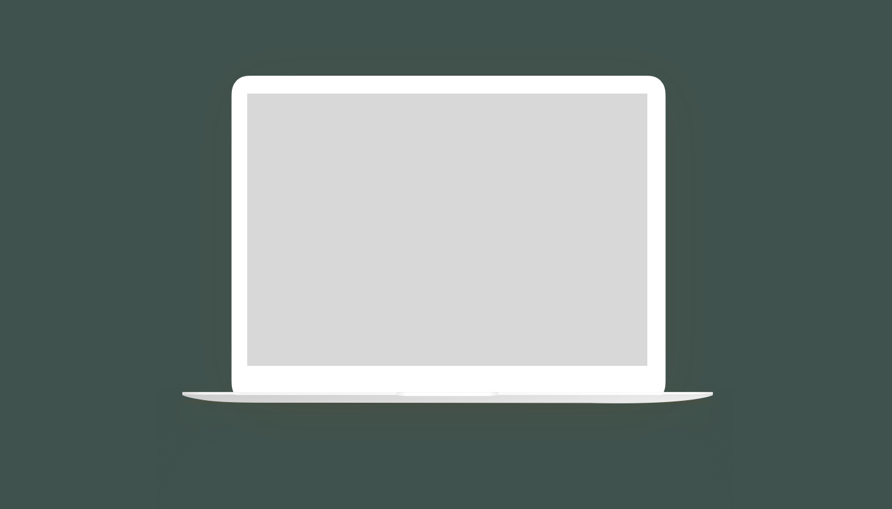
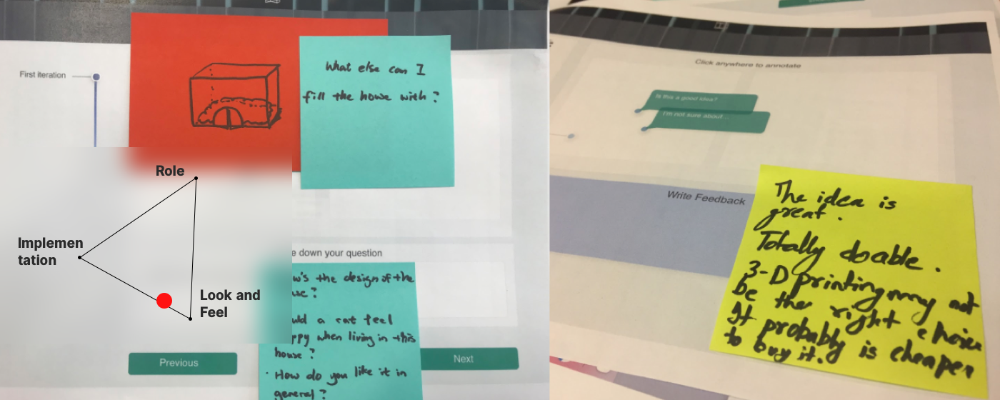
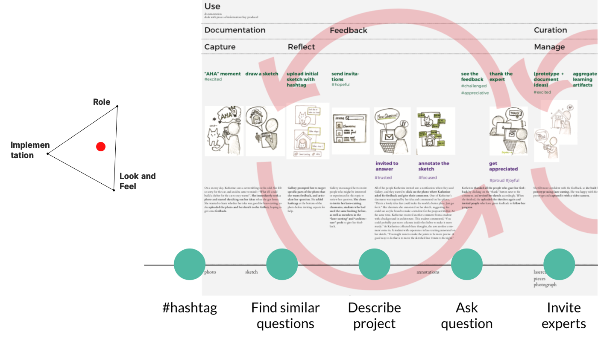
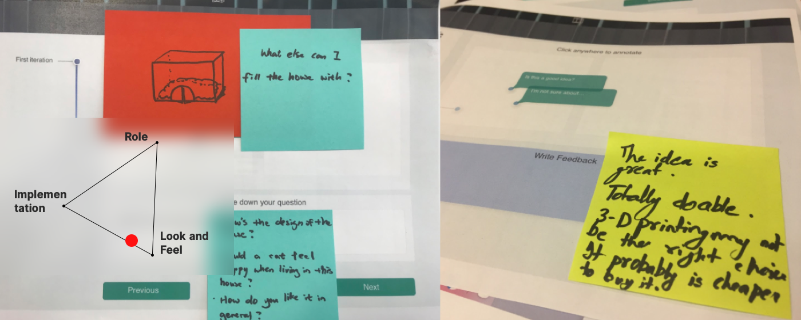
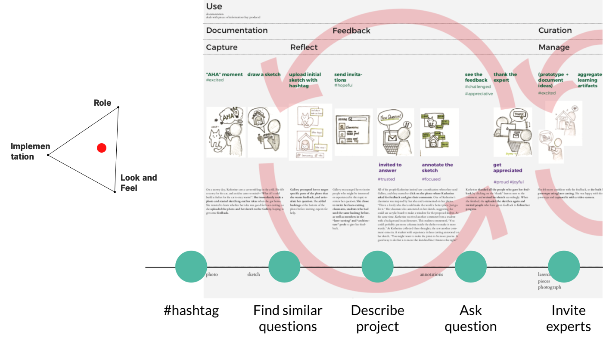
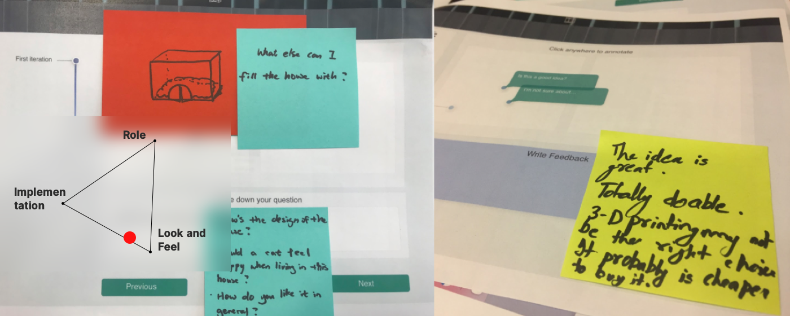
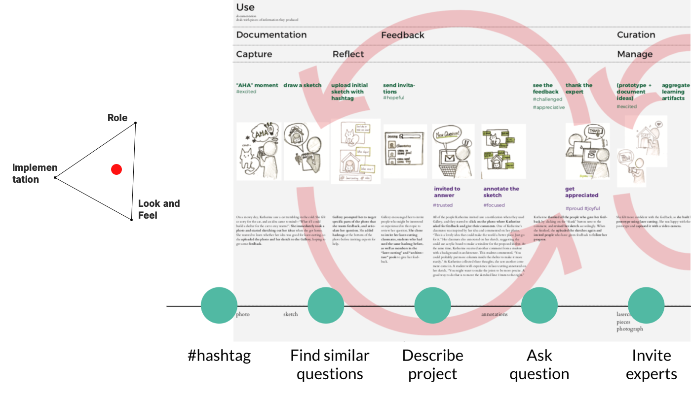

#productivity tool #interface design #user research
IDeATe Gallery Redesign
IDeATe gallery is an application that supports community-based maker movement. Makers can share feedback within the community's safe space.
About the project Duration: 16 weeks Team size: 3

Process
Maker movement
Despite its long trend, the maker movement is not often followed by documentation it deserves. Commissioned by IDeATe, a community in CMY where all the cool stuff happens, we started to figure out the current practice of maker movement and documentation process. The project statement was to improve ideate gallery, an online documentation tool for IDeATe community.
By researching with current users of IDeATe Gallery, we were able to find two insights that could lead to an effective redesign of the system.
I got so happy our affinity diagram revealed striking insights.
Insight 1 - a gap between what users should have done vs. what they actually do
The website was like a hall of fame - where users boast their works. The professors wanted it to look like that, but they also wanted it to be a safe place to practice the students' skills. The students reported that they spent too much extra time on making the documentation. The users of IDeATe website do not have their portfolio platform yet. They, however, wanted to put the projects done in IDeATe to their website in the future.
“I thought it was the place where the best class projects are selected and uploaded” -Jessica
“Gallery only presents the final projects, and we have class critique to get feedback.”
- Rob
From the interviews, we wanted to build a safe place where students hone their documentation skills and are ready to go to the pro field.
We developed user profiles based on our interviews with the existing users - how and why they are using the platform.
Insight 2 - the real value of a maker community
The community has a diverse background, where everyone has expertise in one field and everyone can contribute to each others' works. The students take classes together and build team projects. Those classes intentionally accept the diverse background of people. The community ensures the quality of feedback, different from other forum-based websites like Stack Overflow or Quora. The community gives a sense of safety and belongingness. People also try more to answer the questions randomly asked by others when they are in the makerspace.
Identity model of the target user groups.
Final Goal
From the literature reviews and observation, we wanted to transfer this sense of community and willingness to help in physical space into the virtual space. To put in other words,we wanted to make the portfolio-making process visible and iterative via feedback loops so that novices could get the help needed, and experts could contribute to the project while building. Following are the specifics of our goal.
Create a webpage where users share feedback from other experts.
By sharing feedback, learners learn the best practice, as well as what not to do. This holds true for everyone.
By limiting the person who could answer to a one in the same community, learners feel more safe, less vulnerable.
By having a version control, it visualizes the iterative nature of documentation as opposed to linear, one-way process.
User Journey Map of our two personas, Katherine and James. Experts and novices review each others' works in progress to give out recommendations.
Iteration
After mapping out our users' journey, we started agile prototyping and user testing at the same time. With the paper mockup, we approached the IDeATe students to test it out. We tested the role (What is the role of feedback? / Would experts be interested in giving a feedback?), look and feel ( How would a novice user see this platform? / Would the users be willing to participate?). Our final prototype does not include development, so we excluded implementation as a criterion to measure the effectiveness of our prototype.


Our prototypes used in user studies.
Final Thoughts
Only if we had time to develop the application and actually see the target users use it!


 


